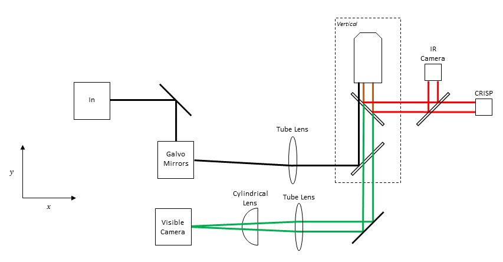
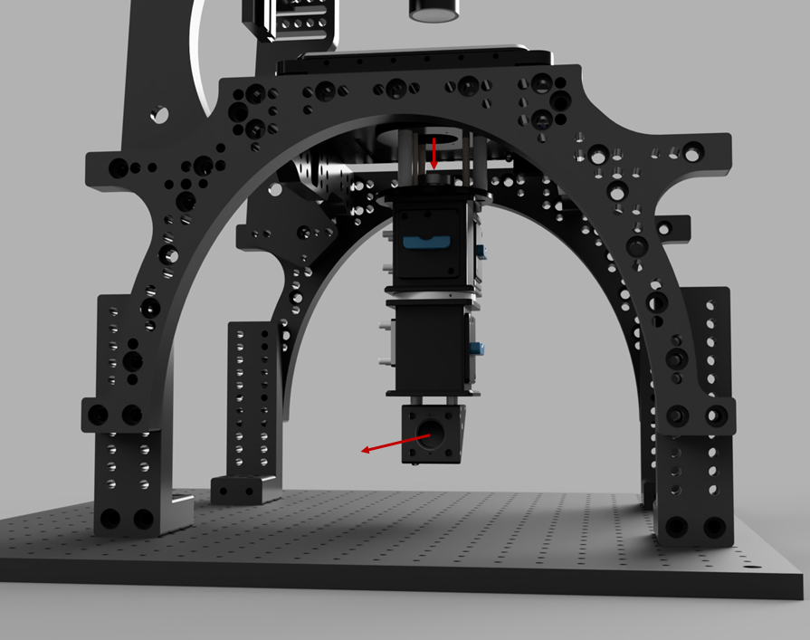
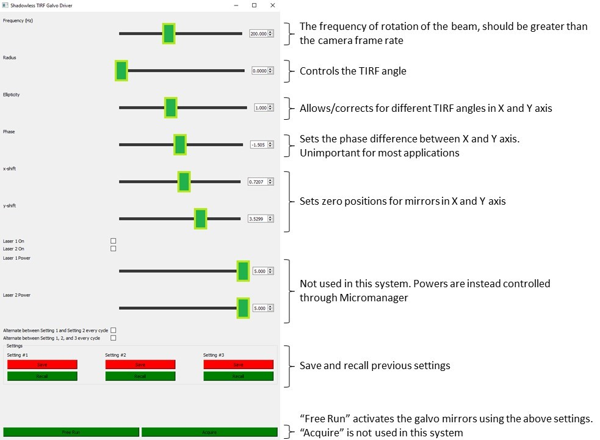
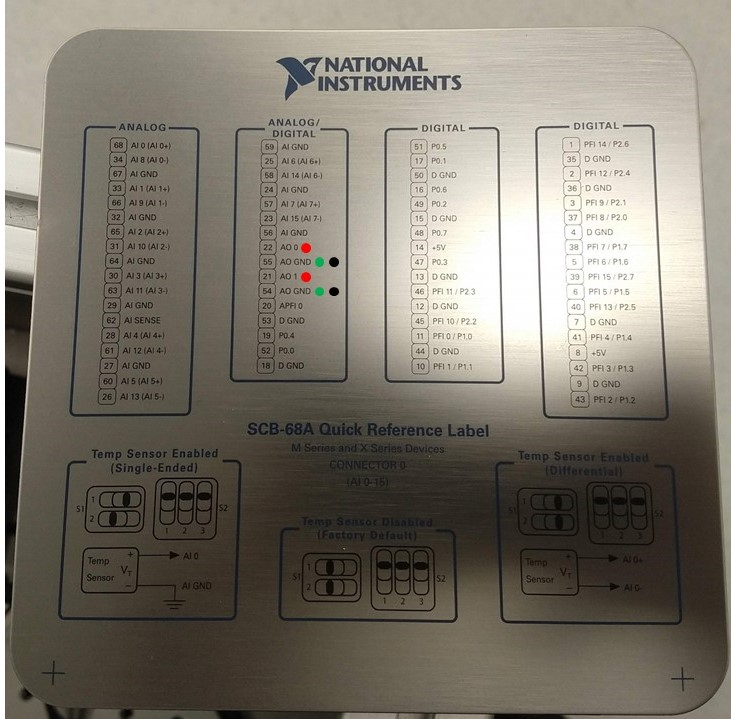
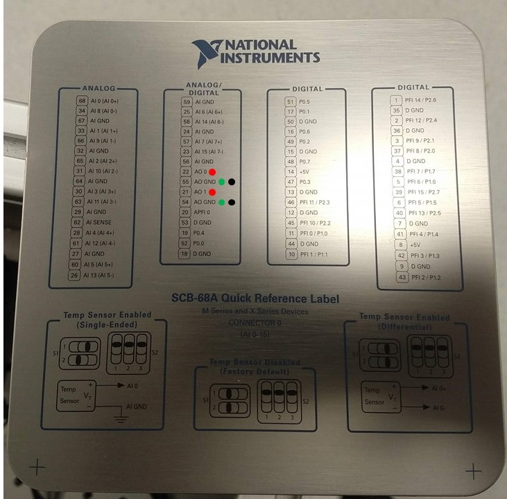

Description
The main body of the microscope contains all of the hardware to fulfill the functionality of a microscope bar fluorescence excitation.
TIRF and HILO illumination is provided by the pair of Galvo-scanning mirrors incorporated into the excitation path after the back port of the main body. This enables the use of ring TIRF whereby through the course of an image the beam illuminates the coverslip from all angles Shadowing and artifacts caused by imperfections in the coverslip or inhomogeneities in the sample are thereby reduced.
A cylindrical lens positioned in a 3D printed box immediately before the camera provides 3D localisation by atigmatism. This contains a rail mounting system to allow for axial adjustment of the lens position. Sliding the lens towards and away from the camera will respectively reduce and increase the severity of the astigmatism at the camera.
This module is also home to The Focus Shifter and Image Autofocus sub-modules. These modules can be operated at a range of wavelengths but we have had success at 850nm and 940nm respctively. Provided that the CRISP system and IR-brightfield LED do not share the same spectral window they may be used simultaneously.
All of this is contained within a structurally open frame to allow for easy access to adjustable components and for the later addition of optical pathways if required.
Parts
Construction
👁 View CAD Design Online 👁
Alignment Laser
Alignment of the main body of the microscope is greatly aided by the use of a dedicated alignment laser with interchangeable screw mounts. This allows for mounting of the laser at various ports and on sections of rail.
👁 Get Designs for Manufacture 👁Construction/Alignment
Before begining assembly, the two vertically mounted Infinity Cubes(in red box below) need to have their filter cubes mounted the other way up to standard. This is achieved by removing the top and bottom plates, swapping them, and turning the cube upside down before fitting in to the microscope. The desired set up can be found in the 3D model and is available on request from Cairn Research as the "LifeHack TriCube".
After this, attach the objective basket, Cubes, and stage to the frame so that the Cubes hang down below. This step was pre-assembled by Cairn Research for our microscope.
Now add the emission path turning mirror. After ensuring that no filters are mounted in the Infinity cubes, mount the alignment laser at the objective port and a target after the mirror to align the turning mirror.
Add the remainder of the emission pathway barring the camera and align the tube lens to the target.
Attach the frame and emission pathway to the breadboard and tighten firmly making sure to double check the alignment after.
Now add the excitation pathway cage as shown below. Mount a target at the cage support plate and insert a suitable dichroic into the lower infinity cube. Align the dichroic to the target with the alignment laser.
Position the tube lens on the cage rods as in the designs and repeat the above step to align it laterally. Precise axial positioning should be conducted in the opposite direction with a target at the objective port.
The rest of the excitation pathway can then be added (the alignment for the Galvos is contained within the Ring TIRF section).
Once the excitation pathway is constructed, the autofocus devices can be fitted (The construction of these is documented on their respective pages). The first step of this is to align the top infinity cube dichroic to the focus shifter pathway. Use the same filter as for the lower cube in order to work with the alignment lens. Then add the combiner cube mirror and align that through the image autofocus pathway.
Ring TIRF
TIRF microscopy is frequently used to study thin samples as its short illumination range dramatically reduces background fluorescence. The most common way of achieving this is to illuminate the coverslip from the edge of the objective at an angle beyond the critical angle. Illuminating in such a way from one point can lead to artefacts in the image due to inhomogeneities at the interface between the sample and the coverslip. Rapidly spinning the beam around the entire circumference of the objective using Galvo mirros greatly reduces this as an averaging effect occurs. The principle and software below are taken from Ellefsen KL, Dynes JL, Parker I (2015) Spinning-Spot Shadowless TIRF Microscopy. PLOS ONE.
Software
Python software is provided to control the Galvos to produce ring TIRF illumination. The graphical user interface is described below.
 👁 Get Software from GitHub 👁National Instruments DAC
To generate the sinusoidal signals required to drive the Galvo mirros a DAC is required. The galvos are connected via a connector panel to the two analogue outputs from said DAC.
 

Alignment and Calibration
- Before connecting the Galvo to the rest of the system, attach the alignment laser to its input and a target/iris on an SM1 tube to the output.

- Zero the Galvo using the "X-shift" and "Y-shift" settings on the software GUI.
- Attach the Galvo to the system and zero the combination of it and the turning lens pair immediately before it.